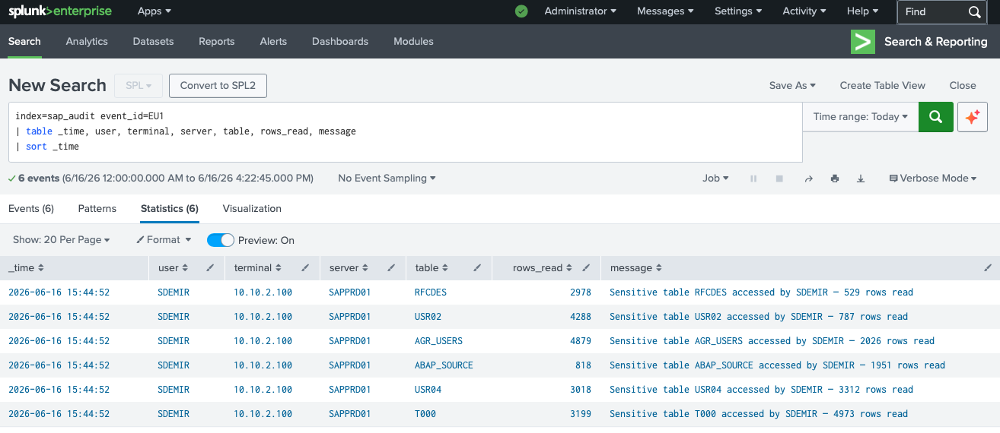

Das EU1-Event — Generischer Tabellenzugriff
Das SAP Security Audit Log Event EU1 (Generic Table Access — Read) wird protokolliert, wenn ein Benutzer über SE16, SE16N, SM30 oder direkte RFC-Aufrufe auf Datenbanktabellen zugreift. Im normalen Betrieb ist EU1 selten — die meisten SAP-Benutzer arbeiten über Transaktionen und sehen niemals rohe Tabellendaten.
Ein Benutzer, der in kurzer Zeit mehrere sensible Tabellen mit tausenden Datensätzen liest, ist ein starkes Indiz für eine gezielte Datenexfiltration — manuell oder über ein automatisiertes Tool.
Warum USR02 der schlimmste Fund ist: Die Tabelle USR02 enthält die Passwort-Hashes aller SAP-Benutzer des Systems. Wer diese Tabelle ausliest, kann die Hashes offline cracken — und erhält danach Zugang zu jedem SAP-Konto, einschließlich aller Admin-Benutzer. Das ist der vollständige Schlüsselbund zum gesamten SAP-System.
Die exfiltrierten Tabellen
| TABELLE | INHALT | DATENSÄTZE | RISIKO |
|---|---|---|---|
| USR02 | Passwort-Hashes aller SAP-Benutzer | 787 | KRITISCH — Offline-Cracking möglich |
| USR04 | Berechtigungsprofile aller Benutzer | 3.312 | KRITISCH — Vollständige Rechtestruktur |
| AGR_USERS | Rollen-Benutzer-Zuordnungen | 2.026 | HOCH — Org-Struktur und Zugriffskarte |
| RFCDES | RFC-Verbindungsdefinitionen inkl. Credentials | 529 | KRITISCH — Zugangsdaten zu Fremdsystemen |
| ABAP_SOURCE | ABAP-Quellcode aller Programme | 1.951 | HOCH — Intellectual Property, Backdoor-Suche |
| T000 | Mandanten-/Systemkonfiguration | 4.973 | MITTEL — Systemlandschaft und Konfiguration |
RFCDES ist oft unterschätzt: Diese Tabelle enthält die gespeicherten Passwörter für alle RFC-Verbindungen zu anderen SAP-Systemen, Datenbanken und externen Services. Wer RFCDES ausliest, bekommt nicht nur Zugang zu diesem System — sondern zu allen verbundenen Systemen der gesamten SAP-Landschaft.
Erkennung — Splunk SPL-Query
Sensitive Tabellenzugriffe identifizieren

Abb. 1 — SDEMIR liest 6 kritische Tabellen von 10.10.2.100 aus — USR02 (787 Datensätze), AGR_USERS (2.026), USR04 (3.312), RFCDES (529), ABAP_SOURCE (1.951), T000 (4.973)
Alle 6 Events haben denselben Zeitstempel — 15:44:52. Das bedeutet: SDEMIR hat diese Tabellen nicht manuell über SE16 aufgerufen, sondern über ein automatisiertes Tool oder einen RFC-Funktionsbaustein, der alle Abfragen parallel abfeuert. Das ist Datenexfiltration mit Werkzeugunterstützung.
Wichtige Erkenntnisse
USR02 + USR04 + AGR_USERS + RFCDES zusammen ergeben: alle Passwort-Hashes, alle Berechtigungen, alle Rollen und alle Zugangsdaten zu Fremdsystemen. Das ist der vollständigste mögliche SAP-Datensatz für einen Angreifer.
Sechs Tabellen in einer Sekunde — das ist physisch nicht manuell möglich. SDEMIR verwendet ein Skript oder ein SAP-Angriffs-Tool (z.B. ein RFC_READ_TABLE-Wrapper). Das deutet auf einen geplanten, vorbereiteten Angriff hin.
Der Zugriff erfolgt von 10.10.2.100 — einer internen IP-Adresse. Entweder ist SDEMIR ein böswilliger Insider, oder ein Angreifer hat SDEMIRs Workstation bereits kompromittiert und agiert von dort aus.
Ein normaler Benutzer liest niemals USR02 oder RFCDES. Ein Alert auf EU1-Events für diese Tabellen hat eine Falsch-Positiv-Rate von nahezu null — jeder Treffer ist ein echter Vorfall.
Empfehlungen
Workstation 10.10.2.100 isolieren, Memory-Dump erstellen, alle Netzwerkverbindungen zum Tatzeitpunkt analysieren. Wohin wurden die Daten übertragen?
Da USR02 ausgelesen wurde, müssen alle SAP-Benutzerpasswörter als kompromittiert betrachtet werden — systemweiter Passwort-Reset aller Konten, beginnend mit Admin-Usern.
Da RFCDES ausgelesen wurde, müssen alle RFC-Verbindungspasswörter in der gesamten SAP-Landschaft sofort geändert werden — alle verbundenen Systeme sind potenziell kompromittiert.
USR02, USR04, AGR_USERS, RFCDES dürfen nur von autorisierten Basis-Administratoren lesbar sein. Berechtigungsobjekt S_TABU_DIS konsequent einsetzen und regelmäßig auditieren.
SAP Security Serie abgeschlossen: Diese fünf Szenarien decken die wichtigsten SAP-Angriffsvektoren ab — von Brute-Force über kompromittierte Admin-Konten und Privilege Escalation bis hin zu externem RFC-Angriff und Datenexfiltration. Alle detektiert mit Splunk SPL und dem SAP Security Audit Log.